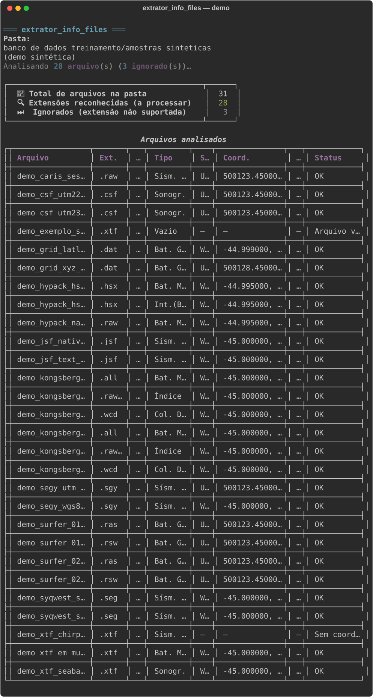

🎯 O que ela resolve
📦 A situação comum
Um HD ou pacote de entrega chega com centenas de arquivos, formatos misturados e pouca documentação sobre o que importar primeiro.
✨ Com o extrator
Você obtém uma visão consolidada do acervo — o suficiente para orientar importação, conferência de entrega ou planejamento do processamento.
👥 Para quem é
- ⚙️ Equipe de processamento — priorizar o que abrir ao receber uma campanha
- ✅ QA e gestão de entregas — conferir se o pacote contém o esperado
- 🔬 Pesquisa e geoprocessamento — ganhar tempo na primeira análise de grandes volumes de dados
👁️ Como fica na prática
Apontada para uma pasta de campanha, a ferramenta gera uma tabela resumida no terminal — tipos de dado, coordenadas e status de leitura em um só lugar. Também é possível exportar relatórios para documentação ou fluxos internos.

📊 Exemplo com amostras sintéticas de demonstração.